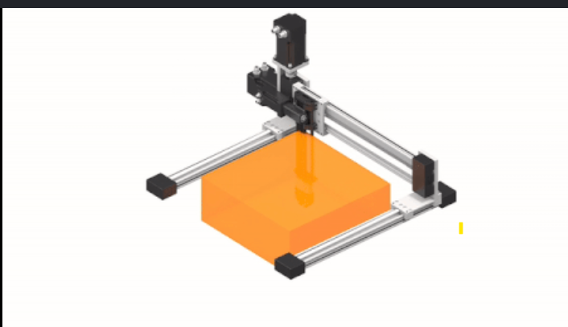

my name is raneem Iam a 24 years old mechatronics engineering graduated at the last 5 month , currently studing a software develpment at knowledge academy
| project name | Langage uses | picture project |
|---|---|---|
| Cartesian robot for indoor smart farm | MATLAB |  |
| Personal Portfolio Website | html |
"I have a set of hobbies that I enjoy doing. First, I really enjoy reading because it helps me learn new things. Second, I love swimming. Third, I am passionate about cooking and learning how to make desserts—I love trying new delicious recipes! Finally, I have a great passion for driving cars, which gives me a sense of freedom and enjoyment."
Ramallah is a vibrant and beautiful city located in the heart of Palestine. It is known for its energetic atmosphere, rich culture, and bustling streets filled with modern cafés and historical sites. The city blends tradition with modernity, making it a hub for art, commerce, and political life. People in Ramallah are warm and welcoming, and the city’s pleasant climate and lively nights give it a unique charm that makes everyone feel right at home.